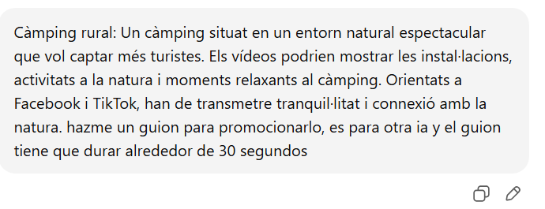
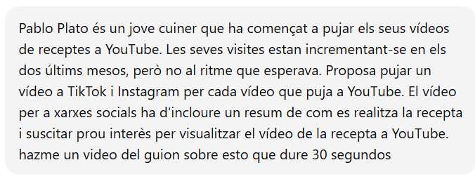

Descripción del proyecto
En este proyecto se han creado vídeos promocionales para redes sociales destinados a dos clientes diferentes: un camping rural y Pablo Plato, creador de contenido gastronómico. Cada vídeo ha sido diseñado teniendo en cuenta el público objetivo y la plataforma de difusión.
El objetivo principal es demostrar el uso correcto de herramientas de inteligencia artificial como apoyo creativo, así como documentar todo el proceso de creación y presentarlo mediante una página web clara y profesional.
Requisitos de los clientes
Cliente Camping Rural
Empresario del sector turístico que desea promocionar su camping rural y atraer nuevos clientes mediante vídeos cortos en redes sociales. La empresa DRAM se ha encargado de la planificación y elaboración de los vídeos promocionales.
Cliente Pablo Plato
Creador de contenido gastronómico que busca aumentar la visibilidad de su canal de YouTube y captar nuevos seguidores mediante vídeos cortos en redes sociales. DRAM ha desarrollado los vídeos con el objetivo de generar interés y dirigir tráfico al canal principal.
Fichas técnicas
Vídeo 1 – Camping Rural DRAM
Audiencia: Jóvenes y adultos que buscan desconectar en la naturaleza
Plataformas: TikTok, Instagram y Facebook
Duración: 48 segundos
Objetivo: Promocionar el camping rural y atraer nuevos clientes
Herramientas IA: ChatGPT, Pictory
Vídeo 2 – Pablo Plato
Audiencia: Todos los públicos
Plataformas: TikTok, Instagram y YouTube
Duración: 44 segundos
Objetivo: Dar visibilidad al canal de YouTube y a las recetas
Herramientas IA: ChatGPT, Pictory
Proceso de creación
- Reparto del trabajo y creación del repositorio en GitHub.
- Búsqueda y selección de herramientas de inteligencia artificial.
- Creación de los guiones con el apoyo de ChatGPT.
- Generación de los vídeos mediante herramientas de IA.
- Diseño y desarrollo de la página web.
- Publicación del proyecto en GitHub Pages.
- Revisión final y ajustes de contenido y diseño.
Prompts utilizados
Prompt – Camping Rural
Prompt utilizado para generar un guion emocional orientado a transmitir tranquilidad, conexión con la naturaleza y desconexión del ritmo urbano.
Prompt – Pablo Plato
Prompt utilizado para crear un guion dinámico y atractivo con el objetivo de generar interés y dirigir al usuario al vídeo completo en YouTube.
